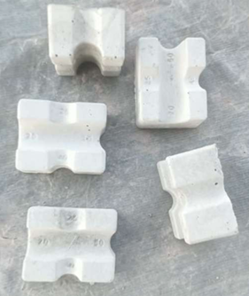
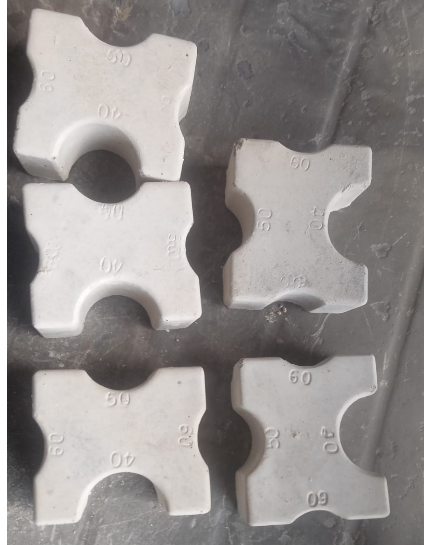
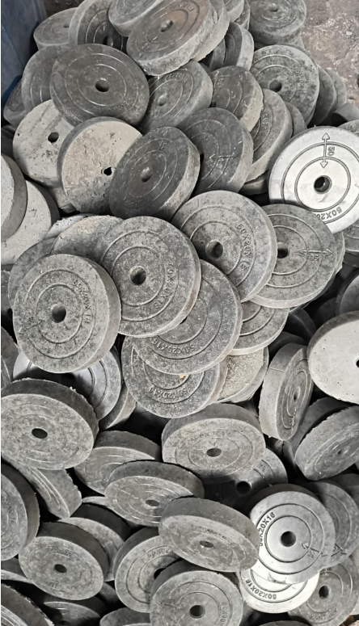
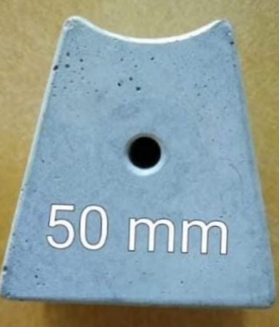
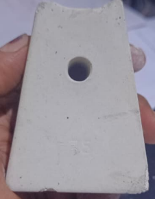

Cement Concrete Cover Blocks
Manufacturer of cement concrete cover blocks and spacer blocks in multiple sizes for slab, beam and column works in Panipat, Karnal and nearby areas.
Manufacturers & Infrastructure Development Contractors
We manufacture and supply cement cover blocks, also called concrete cover blocks, Cement Concrete cover blocks and spacer cover blocks used in slab, beam and column reinforcement works. Supply available across Panipat, Karnal, Samalkha, Sonipat, Kurukshetra, Shamli and Muzaffarnagar.





We supply cement / concrete cover blocks in Panipat, Karnal, Samalkha, Sonipat, Kurukshetra, Delhi, Shamli and Muzaffarnagar.
Also explore: Readymade Precast Boundary Wall, RCC Manhole Covers, RCC Drain Covers & Saucer Drains, RCC Trench Covers, Interlocking Paver Blocks & Tiles.
View all Precast Cement Products
We manufacture 25 mm cover blocks, multi-size 20/25/40/50 mm cover blocks, 30/40/50/60 mm cover blocks, round 50 mm cover blocks and vertical cover blocks in 50 mm and 75 mm.
No. Our cover blocks are made of high-quality cement concrete (PCC) and are used as spacers in RCC slab, beam and column construction.
25 mm cover blocks are commonly used for slabs, while 50 mm cover blocks are used in beams and columns as per construction requirement.
Yes. We supply cement concrete cover blocks in Panipat, Karnal, Samalkha, Sonipat, Kurukshetra, Shamli and nearby areas.